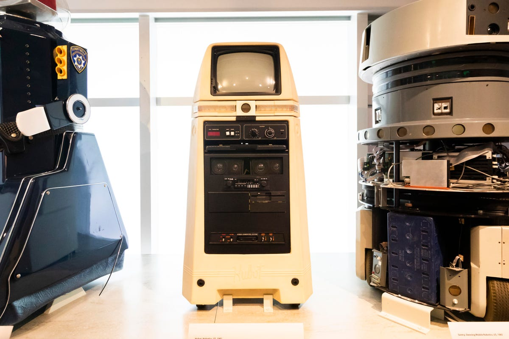
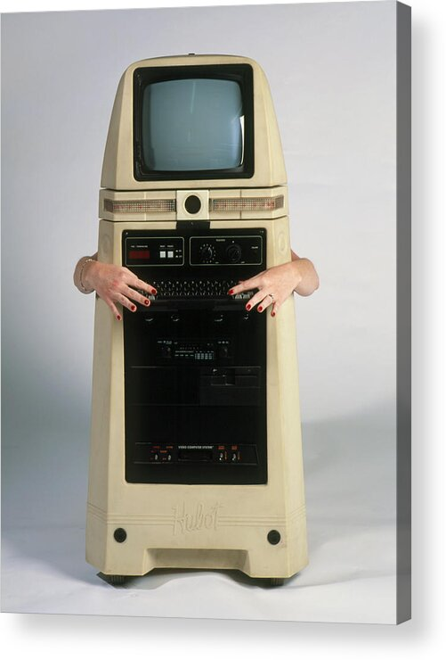

Hubot
The butler robot with an Atari inside

Overview
Hubot was a butler-esque personal home robot developed by California startup Hubotics Inc. Marketed as a companion, educator, entertainer and sentry, it combined a wheeled mobile robot with a voice synthesizer, an on-board computer, a TV/monitor, an Atari 2600 game console, and ultrasonic obstacle sensing. Sources disagree on the exact year: the Science Photo Library and CNET caption it as 1981, while a detailed hardware retrospective dates the company’s formation and CES debut to 1984. It is best treated as an early-1980s project.
Deep dive
Hubotics Inc. was a small Carlsbad, California startup formed to build a personal home robot named Hubot. Mechanical/graphic designer Glen Keith hand-built early prototypes in his home, carving the rotating sensor head from plastic and fiberglass.
Hubot stood roughly 1.10 m tall and moved on wheels. It contained a proprietary CP/M-class computer (one source names SysCon), a monochrome monitor, a detachable keyboard, printer support, joystick control, a 12-inch display, a TV tuner, a cassette deck and an Atari 2600.
A Polaroid-style ultrasonic transducer mounted on a rotating collar scanned the room for obstacles before movement. An optional voice-command module with a built-in microphone allowed limited spoken control; the voice synthesizer could speak about 1,200 words in English.
The robot was demonstrated at the January 1984 Consumer Electronics Show (CES). It was priced at US$3,495 (well over US$10,000 in 2026 dollars). Planned optional modules included a fire/burglar alarm, a robotic arm, a drink tray, a vacuum unit, route programming, and autonomous recharging.
The project was too expensive and too far ahead of its ecosystem to succeed at scale. Production estimates vary; one Reddit post claims roughly 75 units were made, but this is a single-source figure and should be treated cautiously.
Hubot’s body was rotomolded in polyethylene — the same material used for trash cans and water tanks — because it was cheap, rugged and still looked good after scratches. Its head used the same sonar sensor found in Polaroid cameras. Today a Hubot is preserved in the Computer History Museum’s collection.
Hubot is an early, exuberant example of the 1980s personal-robot boom. It anticipated later voice-activated smart-home assistants by several decades, even if it failed commercially.
Team & pioneers
- Glen Keith Mechanical and graphic designer; hand-built early Hubot prototypes in Carlsbad, California, carving the rotating sensor head from plastic and fiberglass.
- Hubotics Inc. Carlsbad startup formed to commercialize a personal home robot. The company demonstrated Hubot at the January 1984 Consumer Electronics Show and priced it at $3,495.
Media


Sources
- Hardware.com.br, “O robô doméstico com Atari embutido que custava caro demais para dar certo” (2025)
- American Computer and Robotics Museum, “Hubot: A Personal History and Reminiscence”
- CNET, “Rise of the robots, from sci-fi to our homes – Hubot, Hubotics, 1981”
- Reddit r/cassettefuturism, “Hubot by Hubotics: A sophisticated personal household robot, c.1983”
- Science Photo Gallery, “Hubot Robot Acrylic Print by Volker Steger / Science Photo Library”
- YouTube: “The Story of Hubot” (Hubotics Inc.)